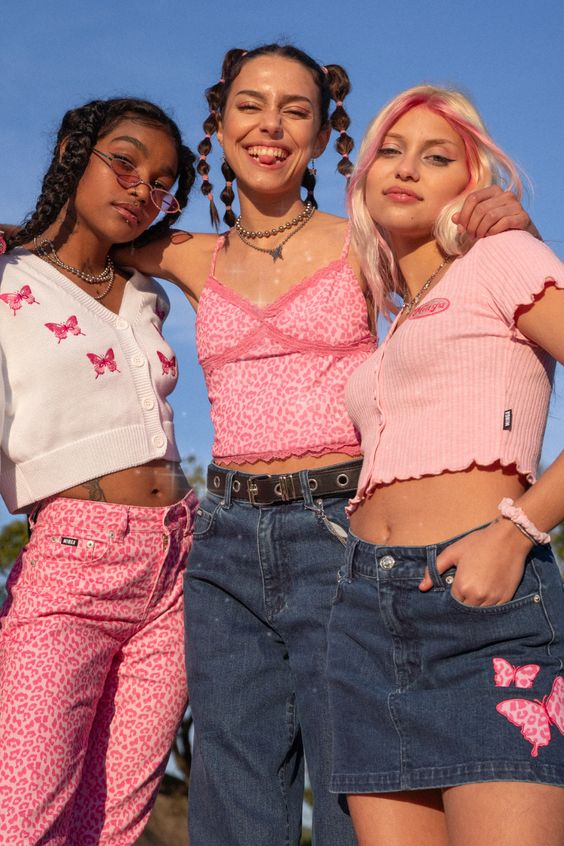

*Khái niệm: Quần áo Vintage thường chỉ những mẫu trang phục rất đẹp và tinh tế thuộc thời đại cũ. Các thiết kế Vintage thường được ra đời trong khoảng thập niên 30 - 60 và thịnh hành trong khoảng thập niên 90. Phong cách thời trang Vintage chỉ lối ăn mặc cổ điển, khơi gợi nét đẹp của quá khứ để làm điểm nhấn cho outfit.

2.Preppy:
*Khái niệm: Đây là một trong những phong cách thời trang phù hợp với văn hóa học đường, hay những nơi cần sự kín đáo, lịch sự. Trang phục Preppy được thiết kế tao nhã, thanh lịch, kín đáo.

3.Sporty:
*Khái niệm: Bỏ qua mọi định kiến rằng Sporty chỉ dành cho những buổi tập luyện thấm đẫm mồ hôi, phong cách này ngày càng trở nên phổ biến trên sàn diễn hay những con phố thời trang hào hoa bậc nhất. Nhờ vào sự thoải mái và tiện dụng cùng những biến tấu trong thiết kế, xu hướng Sporty ngày càng thịnh hành và được hàng loạt các ngôi sao ưa chuộng.

NAMELAZZ
4.Y2K:
*Khái niệm: Làn sóng hình thành phong cách gọi là Y2K thực chất bắt đầu từ sớm hơn năm 2000. Phong cách Y2K là một tổ hợp của những gì rực rỡ nhất mà cũng nổi loạn nhất, chan chứa hy vọng nhất và cũng tang thương nhất.

5.Hippie:
*Khái niệm: Phong cách Hippie thể hiện sự phóng khoáng, du mục, bất quy tắc và sôi nổi trên những bộ thiết kế. Đặc trưng của phong cách này là những bộ quần áo hoặc đầm suôn nhiều tầng lớp và xếp nếp, không tuân theo bất cứ một quy tắc phối hợp nào và thường đi kèm phụ kiện cài đầu, băng đô,… tạo nên tổng thể tưởng như xuề xòa nhưng vô cùng hợp lý.

HIPPIE SHOP